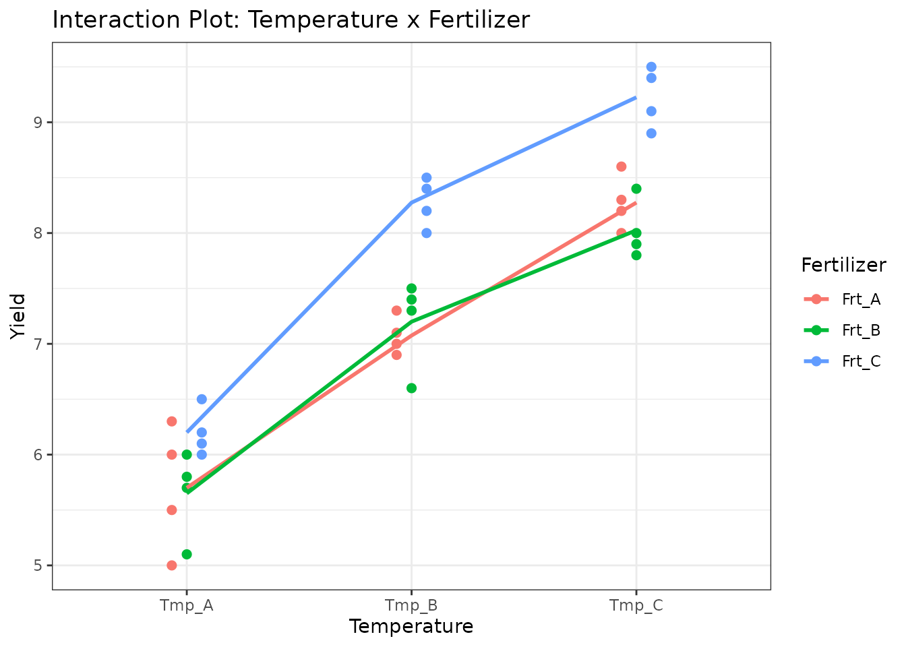
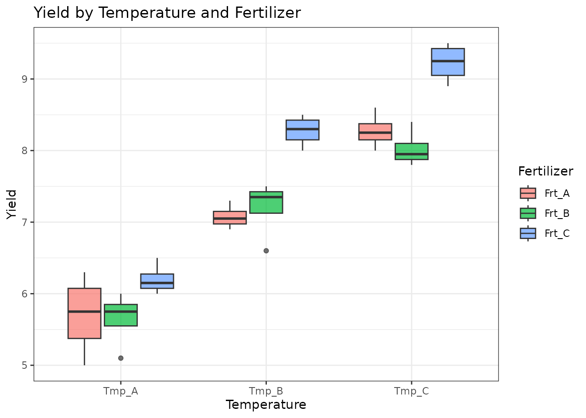
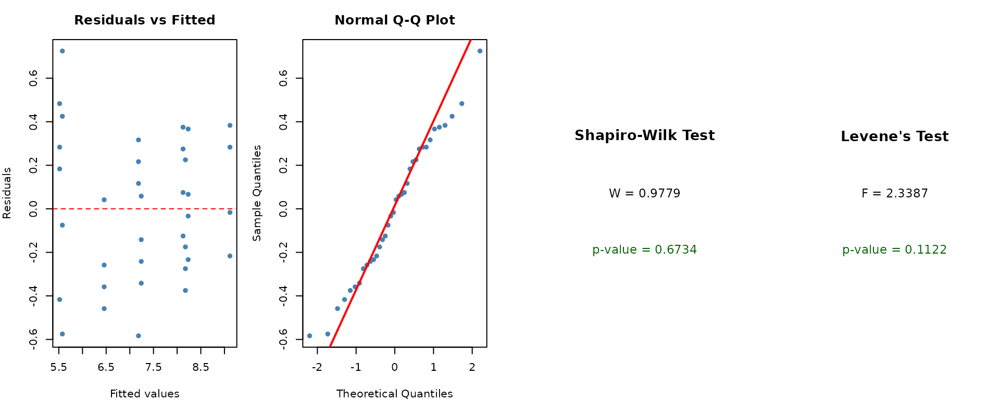
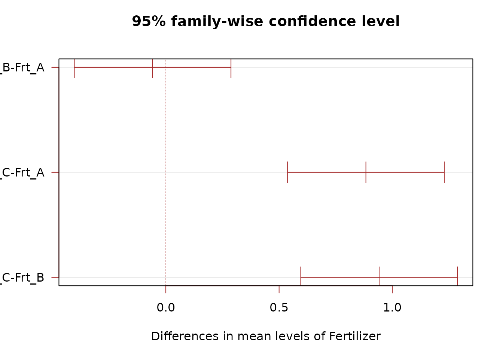
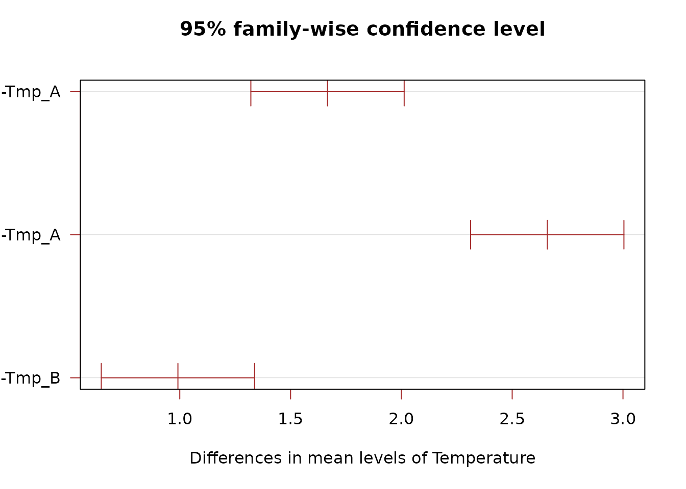
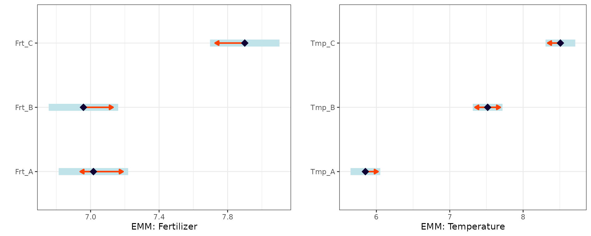

When to Use
A Factorial Design is used when:
- You want to study two or more treatment factors simultaneously.
- You are interested in both main effects and interactions between factors.
- All combinations of factor levels are tested.
Factorial designs are more efficient than running separate one-factor experiments because they provide information about interactions at no extra cost.
The Design
For a two-factor factorial, the model is:
where is the effect of factor A (e.g., Temperature), is the effect of factor B (e.g., Fertilizer), and is their interaction.
Data
We use a dataset crossing three temperature levels with three fertilizer types, with four replicates per combination.
library(agrideshr)
data(factorial_data)
str(factorial_data)
#> Classes 'tbl_df', 'tbl' and 'data.frame': 36 obs. of 3 variables:
#> $ Temperature: Factor w/ 3 levels "Tmp_A","Tmp_B",..: 1 1 1 1 1 1 1 1 1 1 ...
#> $ Fertilizer : Factor w/ 3 levels "Frt_A","Frt_B",..: 1 2 3 1 2 3 1 2 3 1 ...
#> $ Yield : num 5 5.1 6 6 5.8 6.1 6.3 6 6.2 5.5 ...
head(factorial_data, 12)
#> Temperature Fertilizer Yield
#> 1 Tmp_A Frt_A 5.0
#> 2 Tmp_A Frt_B 5.1
#> 3 Tmp_A Frt_C 6.0
#> 4 Tmp_A Frt_A 6.0
#> 5 Tmp_A Frt_B 5.8
#> 6 Tmp_A Frt_C 6.1
#> 7 Tmp_A Frt_A 6.3
#> 8 Tmp_A Frt_B 6.0
#> 9 Tmp_A Frt_C 6.2
#> 10 Tmp_A Frt_A 5.5
#> 11 Tmp_A Frt_B 5.7
#> 12 Tmp_A Frt_C 6.5Exploratory Visualization
library(ggplot2)
ggplot(factorial_data, aes(x = Temperature, y = Yield, colour = Fertilizer,
group = Fertilizer)) +
geom_point(size = 2, position = position_dodge(0.2)) +
stat_summary(fun = mean, geom = "line", linewidth = 1) +
theme_bw() +
labs(title = "Interaction Plot: Temperature x Fertilizer")
ggplot(factorial_data, aes(x = Temperature, y = Yield, fill = Fertilizer)) +
geom_boxplot(alpha = 0.7) +
theme_bw() +
labs(title = "Yield by Temperature and Fertilizer")
Model Fitting
Additive Model (No Interaction)
mod_add <- aov(Yield ~ Temperature + Fertilizer, data = factorial_data)
summary(mod_add)
#> Df Sum Sq Mean Sq F value Pr(>F)
#> Temperature 2 43.31 21.656 182.72 < 2e-16 ***
#> Fertilizer 2 6.68 3.341 28.19 1.06e-07 ***
#> Residuals 31 3.67 0.119
#> ---
#> Signif. codes: 0 '***' 0.001 '**' 0.01 '*' 0.05 '.' 0.1 ' ' 1Full Model (With Interaction)
mod_full <- aov(Yield ~ Temperature * Fertilizer, data = factorial_data)
summary(mod_full)
#> Df Sum Sq Mean Sq F value Pr(>F)
#> Temperature 2 43.31 21.656 199.729 < 2e-16 ***
#> Fertilizer 2 6.68 3.341 30.812 1.08e-07 ***
#> Temperature:Fertilizer 4 0.75 0.187 1.722 0.174
#> Residuals 27 2.93 0.108
#> ---
#> Signif. codes: 0 '***' 0.001 '**' 0.01 '*' 0.05 '.' 0.1 ' ' 1If the interaction term is not significant, the additive model is preferred for its simplicity. If significant, the interaction must be interpreted.
Assumption Checking
check_assumptions(mod_add, data = factorial_data, group = "Temperature")
Post-hoc Comparisons
By Fertilizer
TukeyHSD(mod_add, which = "Fertilizer")
#> Tukey multiple comparisons of means
#> 95% family-wise confidence level
#>
#> Fit: aov(formula = Yield ~ Temperature + Fertilizer, data = factorial_data)
#>
#> $Fertilizer
#> diff lwr upr p adj
#> Frt_B-Frt_A -0.05833333 -0.4042471 0.2875805 0.9096944
#> Frt_C-Frt_A 0.88333333 0.5374195 1.2292471 0.0000016
#> Frt_C-Frt_B 0.94166667 0.5957529 1.2875805 0.0000005
By Temperature
TukeyHSD(mod_add, which = "Temperature")
#> Tukey multiple comparisons of means
#> 95% family-wise confidence level
#>
#> Fit: aov(formula = Yield ~ Temperature + Fertilizer, data = factorial_data)
#>
#> $Temperature
#> diff lwr upr p adj
#> Tmp_B-Tmp_A 1.6666667 1.3207529 2.012580 0e+00
#> Tmp_C-Tmp_A 2.6583333 2.3124195 3.004247 0e+00
#> Tmp_C-Tmp_B 0.9916667 0.6457529 1.337580 2e-07
Estimated Marginal Means
library(emmeans)
emm_fert <- emmeans(mod_add, specs = "Fertilizer")
emm_fert
#> Fertilizer emmean SE df lower.CL upper.CL
#> Frt_A 7.02 0.0994 31 6.81 7.22
#> Frt_B 6.96 0.0994 31 6.76 7.16
#> Frt_C 7.90 0.0994 31 7.70 8.10
#>
#> Results are averaged over the levels of: Temperature
#> Confidence level used: 0.95
pairs(emm_fert)
#> contrast estimate SE df t.ratio p.value
#> Frt_A - Frt_B 0.0583 0.141 31 0.415 0.9097
#> Frt_A - Frt_C -0.8833 0.141 31 -6.285 <0.0001
#> Frt_B - Frt_C -0.9417 0.141 31 -6.700 <0.0001
#>
#> Results are averaged over the levels of: Temperature
#> P value adjustment: tukey method for comparing a family of 3 estimates
emm_temp <- emmeans(mod_add, specs = "Temperature")
emm_temp
#> Temperature emmean SE df lower.CL upper.CL
#> Tmp_A 5.85 0.0994 31 5.65 6.05
#> Tmp_B 7.52 0.0994 31 7.31 7.72
#> Tmp_C 8.51 0.0994 31 8.31 8.71
#>
#> Results are averaged over the levels of: Fertilizer
#> Confidence level used: 0.95
pairs(emm_temp)
#> contrast estimate SE df t.ratio p.value
#> Tmp_A - Tmp_B -1.667 0.141 31 -11.858 <0.0001
#> Tmp_A - Tmp_C -2.658 0.141 31 -18.914 <0.0001
#> Tmp_B - Tmp_C -0.992 0.141 31 -7.056 <0.0001
#>
#> Results are averaged over the levels of: Fertilizer
#> P value adjustment: tukey method for comparing a family of 3 estimates
p1 <- plot(emm_fert, comparisons = TRUE) +
theme_bw() + labs(y = "", x = "EMM: Fertilizer")
p2 <- plot(emm_temp, comparisons = TRUE) +
theme_bw() + labs(y = "", x = "EMM: Temperature")
gridExtra::grid.arrange(p1, p2, ncol = 2)
Conclusion
Factorial designs allow efficient study of multiple factors and their interactions. The analysis workflow:
- Fit both additive and interaction models.
- Test whether the interaction is significant.
- If no interaction: interpret main effects separately.
- If interaction present: use conditional contrasts to compare one factor within levels of the other.
When factors have a nested structure (e.g., sub-treatments applied within main treatments), consider a Split-Plot Design.